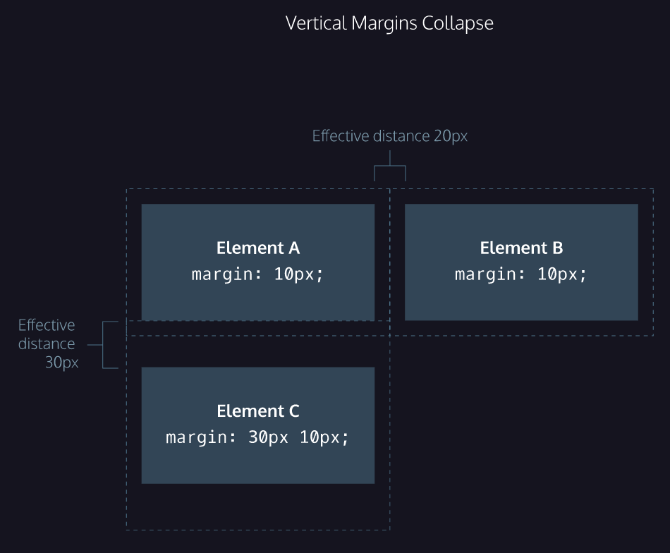

|
height: value;
width: value;
|
properties modify default dimensions of an HTML box
NOTE:
pixels allow to set the exact size of an element's box (width and height), when the width and height of an element are set in pixels, it will be the same size on all devices — an element that fills a laptop screen will overflow a mobile screen
|
|
border: width style color;
|
a line that surrounds an element, like a frame around a painting, can be set with a specific width, style, and color:
- width — the thickness of the border, can be set in pixels or with one of the following keywords: thin, medium, or thick
- style — the design of the border, web browsers can render any of 10 different styles, some of these styles include: none, dotted, and solid
- color — the color of the border, web browsers can render colors using a few different formats, including 140 built-in color keywords
NOTE: the default border is medium none color, where color is the current color of the element, if width, style, or color are not set in the CSS file, the web browser assigns the default value for that property
|
|
border-radius: value;
|
modifies the corners of an element's border box
NOTE: there is possible to create a border that is a perfect circle by first creating an element with the same width and height, and then setting the radius equal to half the width of the box, which is 50%
|
|
padding: value(s);
|
padding is the space between the contents of a box and the borders of a box, it can be modified with this property, it is often used to expand the background color and make the content look less cramped
NOTE: to be more specific about the amount of padding on each side of a box's content, the following properties can be used:
- padding-top
- padding-right
- padding-bottom
- padding-left
each property affects the padding on only one side of the box's content, giving a more flexibility in customization,
Padding shorthand lets specify all of the padding properties as values on a single line:
- the four values correspond to the amount of padding on each side, in a clockwise rotation
- the three values: the first value sets the padding-top value, the second value sets the padding-left and padding-right values, and the third value sets the padding-bottom value
- two values: the first value sets the padding-top and padding-bottom values, and the second value sets the padding-left and padding-right values
|
|
margin: value(s);
|
margin refers to the space directly outside of the box, it can be modified with this property
NOTE: to be more specific about the amount of margin on each side of a box's content, the following properties can be used:
- margin-top
- margin-right
- margin-bottom
- margin-left
each property affects the margin on only one side of the box's content, giving a more flexibility in customization,
Margin shorthand lets specify all of the margin properties as values on a single line:
- the four values correspond to the amount of margin on each side, in a clockwise rotation
- the three values: the first value sets the margin-top value, the second value sets the margin-left and margin-right values, and the third value sets the margin-bottom value
- two values: the first value sets the margin-top and margin-bottom values, and the second value sets the margin-left and margin-right values
|
|
margin: value auto;
|
the margin property also lets to center content - the auto value instructs the browser to adjust the left and right margins until the element is centered within its containing element
in order to center an element, a width must be set for that element, otherwise, the width of the div will be automatically set to the full width of its containing element, like the 'body', for example - it's not possible to center an element that takes up the full width of the page, since the width of the page can change due to display and/or browser window size
|
|
Margin Collapse

source: codecademy
|
- top and bottom margins, also called vertical margins, collapse, while top and bottom padding does not
- horizontal margins (left and right), like padding, are always displayed and added together. For example, if two divs with ids #div-one and #div-two, are next to each other, they will be as far apart as the sum of their adjacent margins
- unlike horizontal margins, vertical margins do not add, instead, the larger of the two vertical margins sets the distance between adjacent elements
- it may be helpful to think of collapsing vertical margins as a short person trying to push a taller person - the tall person has longer arms and can easily push the short person, while the person with short arms cannot reach the person with long arms
|
|
min-height: value;
max-height: value;
|
these properties ensure a minimum and/or maximum height for an element's box - content, like text, can become difficult to read when a browser window is narrowed or expanded - these two properties ensure that content is legible by limiting the minimum and maximum widths of an element
|
|
overflow: value;
|
controls what happens to content that spills, or overflows, outside its box, the most commonly used values are:
- hidden — when set to this value, any content that overflows will be hidden from view
- scroll — when set to this value, a scrollbar will be added to the element’s box so that the rest of the content can be viewed by scrolling
- visible—when set to this value, the overflow content will be displayed outside of the containing element (note, this is the default value)
NOTE: the overflow property is set on a parent element to instruct a web browser on how to render child elements (for example, if a div’s overflow property is set to scroll, all children of this div will display overflowing content with a scroll bar)
For a more in-depth look at overflow, including additional properties like overflow-x and overflow-y that separate out the horizontal and vertical values, head over to the MDN documentation
|
|
Resetting Defaults
|
all major web browsers have a default stylesheet they use in the absence of an external stylesheet, known as user agent stylesheets, it often has default CSS rules that set default values for padding and margin - this affects how the browser displays HTML elements, which can make it difficult for a developer to design or style a web page
Many developers choose to reset these default values so that they can truly work with a clean slate.
NOTE: when these properties are set to 0, they do not require a unit of measurement
|
|
visibility: value;
|
elements can be hidden from view with this property, it can be set to one of the following values:
- hidden — hides an element
- visible — displays an element
- collapse — collapses an element
NOTE:
- users can still view the contents of the list item by viewing the source code in their browser, furthermore, the web page will only hide the contents of the element - it will still leave an empty space where the element is intended to display
- an element with 'display: none' will be completely removed from the web page, an element with 'visibility: hidden', however, will not be visible on the web page, but the space reserved for it will
|